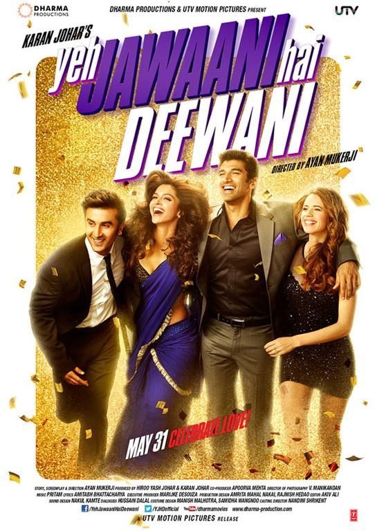
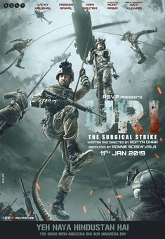
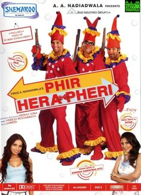

|  |
The movie "Yeh Jawaani Hai Deewani" is a delightful blend of romance, friendship, and adventure that resonates with audiences of all ages. With its captivating storyline, beautiful cinematography, and stellar performances, it's a timeless Bollywood classic that celebrates the spirit of youth and the journey of self-discovery. This movie explain's how to be an extrovert and to enjoy your life to fullest and with one remarkable lesson:- That in life you can't have everything , you have to leave something back GENERE:ROMANTIC,COMEDY |
|  |
This movie "Uri: The Surgical Strike" is a gripping tribute to the valor of the Indian Armed Forces. With intense action and powerful performances, it's a must-watch for its patriotic fervor and realistic portrayal of military operations.Indian soldiers avenge a deadly terrorist attack ,It's really thrilling and i remember when i was watching the film iwas sticked to my seat. GENERE:THRILLER,ACTION |
|  |
This Movie "Phir Hera Pheri" is a hilarious comedy sequel featuring Akshay Kumar, Suniel Shetty, and Paresh Rawal. Known for its witty humor and memorable performances,it's a favorite among comedy movie enthusiasts. It is one of the Funniest Movie I have ever seen GENERE:COMEDY |